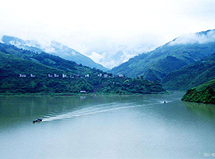
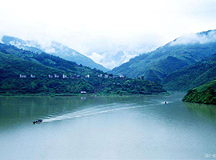

流域概况
地貌
长江流域位于东经90°33′～122°25′，北纬24°30′～35°45′之间。 由江源至河口，整个地势西高东低，形成三级巨大阶梯。第一阶梯由青海南部和四川西部高原和横断山区组成，一般高程在3500～5000m。第二阶梯为云贵高原秦巴山地、四川盆地和鄂黔山地，一般高程在500～2000m。第三阶梯由淮阳山地、江南丘陵和长江中下游平原组成，一般高程在500m以下。流域内的地貌类型众多，有山地、丘陵、盆地、高原和平原。
气候特点
长江流域气候温暖，雨量丰沛，由于幅员辽阔，地形变化大，因此有着多种多样的气候类型。也经常发生洪、涝、旱、冰雹等自然灾害。长江中下游地区四季分明，冬冷夏热，年平均气温16～18℃，夏季最高气温达40℃左右，冬季最低气温在零下4℃左右。四川盆地气候较温和，冬季气温比中下游增加约5℃。昆明周围地区则是四季如春。在金沙江峡谷地区呈典型的立体气候，山顶白雪皑皑，山下四季如春。江源地区属典型的高寒气候，年平均气温-4.4℃，四季如冬、干燥、气压低、日照长和多冰雹大风。
 

人口
长江流域有人口约4亿人，占全国1/3，其中农业人口约3.2亿人。在流域总人口中，约94%为汉族；还有50多个少数民族，2000余万人，其中超过100万人的有 土家、苗、彝、侗、藏、回等6个民族，各少数民族主要居住在云贵高原、青藏高原、川西、湘西和鄂西一带。长江流域人口稠密，平均人口密度超过220人/k㎡，特别是长江三角洲、成都平原和长江中下游平原，人口密度达600～900人/k㎡，上海达4600人/k㎡以上，是中国人口最稠密的地区。
长江流域共有14个民族自治州，32个民族自治县，主要分布在长江上游，中游较少，下游没有。全流域50多个民族总人口约4亿人，其中汉族约占94.24%，少数民族约占5.76%。长江流域少数民族中，人口在10万人以上的民族依次为：土家族、苗族、彝族、侗族、藏族、回族、布依族、白族、瑶族、仡佬族、纳西族、傈僳族、羌族等13个民族，人口在十万人以下的民族依次为：蒙古族、鲁族、满族、壮族、傣族、水族、普米族，其中普米族刚过1万人。